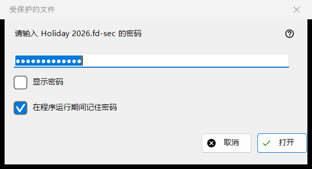
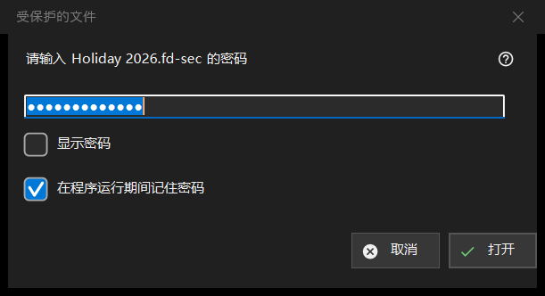

受保护的文件
用途说明
当受保护的容器（.fd-sec 文件）出现在屏幕上时，询问它的密码。按 Enter 或点击被锁定的文件时会打开，在你停留在这类文件上时也会自动打开；幻灯片会跳过受保护的文件并计数。内容从内存中显示：解密后的任何内容都不会写入磁盘。仅限现代版查看器。


操作顺序
- 输入密码；它被遮盖显示。
- 如果其他容器使用同一个密码，请勾选「在程序运行期间记住密码」。
- 点击「打开」（Enter）。
- 「取消」（Esc）使文件保持锁定。
界面元素
密码
提示会写明文件名。「显示密码」一开始是关闭的。密码按输入的原样使用，并在主线程之外校验，因此在耗时的密钥派生运行期间，查看器仍能响应；它绝不会写入注册表、文件或 Windows 凭据库。
在程序运行期间记住密码
默认勾选。它把密码保存在内存中直到程序关闭，并且只在某个容器确实用它打开之后才保存；之后查看器会在接下来的容器上静默地尝试它，只有不匹配时才询问。
被拒绝与空密码
尝试失败后，窗口会回来并显示「未能打开：密码可能不对，这个文件也可能从来就不是容器，或者已被改动。」这些情形故意看起来一样：错误的密钥和被改动的一个字节无法区分。损坏或不受支持的容器有自己的提示，不会弹出密码窗口。空密码是被接受的，但第一次按 Enter 会显示「空密码不是保护：这样的文件只是躲过随意一瞥。再按一次即可打开。」，第二次按才会打开文件。
取消
取消、Esc 和关闭框是同一条路径，不会改变任何内容。文件显示「需要密码 - 请按 Enter 或点击该文件」，只要该文件夹保持打开，查看器就不会再为它询问。按 Enter 或点击该文件会再次询问。